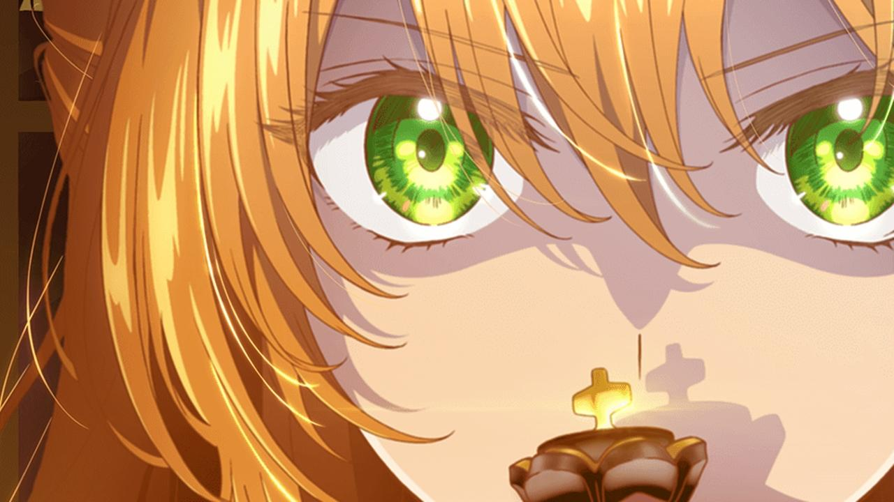

BrocherRainbow
Anime
Contacto
Manga
Mercancia
Reseñas
Search
Anime
SPY x FAMILY celebra su séptimo episodio con más ilustraciones
21 mayo, 2022
Kurumi Tokisaki protagoniza el nuevo avance del anime Date A Live
3 junio, 2022
El anime Chainsaw Man revelará nuevos detalles en agosto
4 Julio, 2022
El manhwa Solo Leveling anuncia su adaptación al anime
4 julio, 2022

El webtoon Kanojo ga Koushakutei ni Itta Riyuu tendrá un anime
4 julio, 2022
La película de Yuru Camp consigue una fabulosa recaudación inicial
4 julio, 2022
El anime Mob Psycho 100 lanza un nuevo visual para su tercera temporada
3 julio, 2022
La segunda temporada de Kyokou Suiri revela un nuevo video promocional
3 julio, 2022